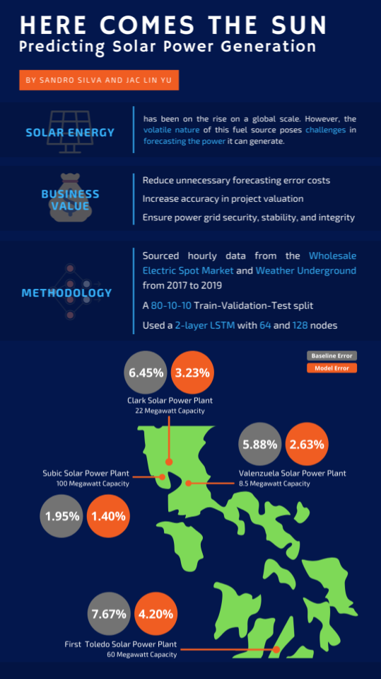
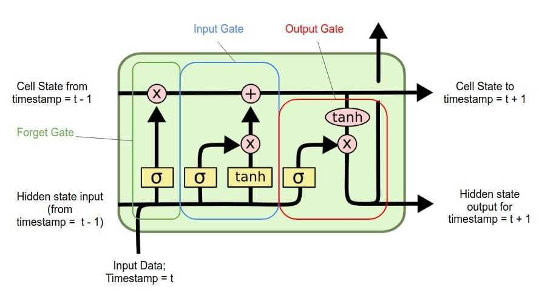

2 Abstract
Due to the increasing focus towards sustainable global efforts against climate change, renewable energy generation, more specifically solar power generation, has experienced a significant growth in the past few years. However, solar power production by nature is still considered highly volatile and intermittent, due to its high dependency on various factors such as irridiation, cloud cover, temperature, and other weather parameters. As such, the inherent volatile nature of solar poses significant challenges in accurate forecasting techniques not only to solar power plant operators but also to power grid operators. This paper provides a deep learning model approach in forecasting solar power production with multiple weather variables
In the paper, four sites across the Philippines were considered, and four variations of the LSTM model were implemented. For two power plants, the best model had a single layer (32-nodes) LSTM, while the other two, utilized a two layer LSTM model with 64 and 32 nodes. The modifed Mean Absolute Error across all four sites reduced by at least 60% when compared to industry standard.

3 Introduction
With the increasing devastating e ects of climate change, governments and industries have long been developing policies to mitigate its impact. In the COP21 or the 2015 Paris Climate Conference, all participating countries have agreed to reduce carbon emission in order to contain global warming to below 2°C. In addition, the United Nation’s 2030 Sustainable Development Goals which aims to address various societal issues, include provisions to produce affordable and clean energy (SDG 7) and provide climate action (SDG 13). Thus, the global energy industry has veered its focus away from traditional fuel sources to renewable and sustainable solutions, such as hydroelectric, solar and wind.
3.1 Statement of the Problem
The shift towards renewable energy poses new threats and challenges to existing power grids across the world due to the inherent variability and intermittency of solar power. The problem then is “Using neural networks, can solar power generation be predicted better than what industry currently uses given weather data?”
3.2 Significance
Accurate forecasting of solar power can help solar power plant operators reduce the risk of unnecessary market penalties. In addition, forecasting accurate solar power generation may provide power grid operators the ability to balance and schedule the distribution of generated power, for not only renewable power operators, but also conventional (and rigid) power plants, such as coal and natural gas. The overall significance of this study is to ensure a more secure and stable power grid even with high solar power penetration.
3.3 Scope and Limitation
The study only considers four solar power plants located in North Luzon, Greater Metro Manila, Visayas. No plants in the South Luzon and Mindanao regions were considered. Only 2 years and 8 months worth of weather data was included in the study. This data, however, does not include solar irridiance, an important indicator of solar power generation, due to the lack of availability.
4 Proposed Framework
4.1 Long-Short Term Memory

Long Short Term Memory, or also known as LSTM, is a deep learning method proposed in 1997 to address the vanishing or exploding gradient problem encountered in Recurrent Neural Networks when dealing with time series forecasting (Zhang, Chi, and Xiao 2018). It is a type of recurrent neural network (RNN) that can learn long-term dependencies between time steps of sequence data. It does this by integrating a memory cells, also known as gates, that allows the learning of complex and long-term temporal dynamics of the data (Qing and Niu 2018). Figure 1 shows the gates mechanism that allows the interaction of the memory cell (Rassem, El-Beltagy, and Saleh 2017).
These “gates” determine which unimportant data should be forgotten and which important feature should be remembered. These gates are typically composed on sigmoid neural net layers and a pointwise multiplication operation. There are three gates in a typical LSTM: forget gate, input gate, and output gate.
\[ \vec{i}_t=\sigma(\vec{W}_{xi}\vec{x}^{t}+\vec{W}_{hi}\vec{h}^{(t-1)}+\vec{b}_i) \tag{1}\]
\[ \vec{g}_t=tanh(\vec{W}_{xg}\vec{x}^{t}+\vec{W}_{hg}\vec{h}^{(t-1)}+\vec{b}_g) \tag{2}\]
\[ \vec{f}_t=\sigma(\vec{W}_{xf}\vec{x}^{t}+\vec{W}_{hf}\vec{h}^{(t-1)}+\vec{b}_f) \tag{3}\]
\[ \vec{o}_t=\sigma(\vec{W}_{xo}\vec{x}^{t}+\vec{W}_{ho}\vec{h}^{(t-1)}+\vec{b}_o) \tag{4}\]
\[ \vec{C}^t=(\vec{C}^{(t-1)}\odot\vec{f}_{t})\oplus(\vec{i}_{t}\odot\vec{g}_{t}) \tag{5}\]
\[ \vec{h}_t=\vec{o}_{t}\odot tanh(\vec{C}_{t}) \tag{6}\]
The input gate (\(i_t\)) seen in Equation 1 and input modulation gate (\(g_t\)) seen in Equation 2, where \(\vec{W}\) are the weights matrices and \(\vec{b}\) are the bias terms, allows the updating of the cell.
Equation 3 shows the computation of the forget gate (\(f_t\)) which determines if the information is suppressed or allowed to pass through and Equation 4 shows the computation of the output gate (\(o_t\)) which decides how the hidden states are updated.
At the current time step (\(t\)), the cell is updated by Equation 5 and the values of the hidden units are updated by Equation 6
4.2 Evaluation Metric
Traditionally, researchers utilized classical statistical indicators used in solar power forecasting, specically the Mean Absolute Error, or also known as \(MAE\), as mentioned by(Wang, Qi, and Liu 2019) and (Sobri, Koohi-Kamali, and Rahim 2018). The \(MAE\) refers to the average distance between the measured values and forecasting model. This analysis is appropriate to evaluate uniform prediction errors.
\[ MAE = \frac{1}{N} \sum_{n=1}^{N} | P_{pred}-{P_{act} |} \tag{7}\]
where \(P_{pred}\) defines the predicted energy generation by the model and \(P_{act}\) defines the actual energy generation
However, the \(MAE\) fails to consider power grid elements and requirements. It is therefore important to utilize performance metrics that asses power generation forecasting by considering various forecast time-scales, and capacity restrictions. In addition, Sobri, Koohi-Kamali, and Rahim (2018) indicated that depending on the use case, metrics assessments can be classified into four types i.e., statistical, ramp characterization, uncertainty quantification, and economic metrics. As such, Almeida, Perpiñán, and Narvarte (2015), implemented a modified \(MAE\), defined as cvMAE, which evaluates a model by that penalize the hourly or daily energy error. The \(cvMAE\) measures the goodness of the predictions for applications requiring hourly predictions during a period of a day. (Almeida, Perpiñán, and Narvarte 2015)
\[ cvMAE = \frac{MAE}{P_{mean}} \tag{8}\]
where \(P_{mean}\) defines the mean of measured power in a given time-horizon.
In this study, a modified version of the \(MAE\) and \(cvMAE\) will be utilized. The proposed metric takes into consideration not only classical statistical error measurement observed in the \(MAE\), but also energy industry related considerations, such as day-ahead projected generation and rated capacity of each specific plant, labeled as \(mMAE\)
\[ mMAE = \frac{\frac{1}{N} \sum_{n=1}^{N} | P_{pred}-{P_{act} |}}{P_{max}}=\frac{MAE}{P_{max}} \tag{9}\]
where \(P_{max}\) indicates a solar power plant’s peak installed capacity, or the intended full-load sustained output of the power plant.
5 Methodology
5.1 Dataset
From December 26, 2016 to August 25, 2019, energy generation data in megawatts (MW) was collected from the Philippines’ Wholesale Electricity Spot Market (WESM). To limit the scope of the study, only four solar power plants located across Luzon and Visayas were chosen. One power plant was selected per location/province. Table 1 shows these plants along with their location and rated dependable capacity, a metric that refers to the maximum amount of power that a power plant can produce over a specified period of time, while Table 2 shows a data dictionary of the collected data.
| Power Plant | Location | Capacity (in MW) | |
|---|---|---|---|
| Clark Solar Power Plant | Mabalacat, Pampanga | 22 MW | |
| First Toledo Solar Power Plant | Toledo, Cebu | 60 MW | |
| Subic Solar Power Plant | Olongapo, Zambales | 100 MW | |
| Valenzuela Solar Power Plant | Valenzuela, NCR | 8.5 MW |
| Name | Definition |
|---|---|
| DATETIME | Delivery datetime (ex. 12/26/2016 12:00:00 AM) |
| YEAR | Datetimelike Property for the Specific Year in the Datetime |
| MONTH | Datetimelike Property for the Specific Month in the Datetime |
| DAY | Datetimelike Property for the Specific Day in the Datetime |
| HOUR | Datetimelike Property for the Hour/Interval in the Datetime |
| RESOURCE_ID | Each power plant and unit has a specific ID |
| MW | Registered MW generated for the spefic hour |
Corresponding weather data, in each of these four locations, were collected separately from the Weather Underground website. The weather data contained 10 features. A data dictionary of the collected data can be seen in Table 3.
| Name | Unit of Measure |
|---|---|
| Temperature | degrees Fahrenheit |
| Humidity | percentage |
| Dew Point | degrees Fahrenheit |
| Pressure | inches |
| Precipitation | inches |
| Cumulative Precipitation | inches |
| Wind Speed | mph |
| Wind Gust | mph |
| Wind Direction | direction of wind |
| Weather Condition | conditional |
Granularity of the data is in 1-hr intervals, which results in a total of 23160 observations per plant. The experiment implemented a 80-10-10 training, validation and test split.
5.2 Models
5.2.1 Industry Benchmark
For the industry benchmark, \(P_{pred}\) is defined as each solar power plant’s day-ahead hourly projection submission to the market operator (in this case \(T_{t-24}\) hours), and \(P_{act}\) is defined as the actual scheduled dispatch by the solar plant considering the market operator’s dispatching schedule. The comparison between the \(P_{pred}\) and the \(P_{act}\) were examined.
5.2.2 Proposed Models
Four proposed models were utilized in this study all focusing on the LSTM neural network. Networks 1 and 2 considered a single LSTM layer with nodes, 64 and 32 respectively, while networks 3 and 4 considered a stacked two layer LSTM network with nodes 64-32 and 32-64 respectively.
An additional feed-forward hidden layer with a rectified linear unit activation function was utilized at the end of all four networks, where the number of hidden nodes corresponded to the number of hidden nodes of the last LSTM layer.
Network 1 and 4 utilized 32 nodes, while networks 2 and 3 utilized 64 nodes. All four networks considered the optimizer=RMSProp, dropouts=0.2 and recurrent dropouts=0.2, batch size=128, and an epoch setting=50.
6 Results
| Power Plant | Best Model | Industry Benchmark Model | Performance Improvement |
|---|---|---|---|
| Clark Solar Power Plant | LSTM+LSTM with 32 & 64 nodes | 2.86% | 12.01% |
| First Toledo Solar Power Plant | LSTM with 32 nodes | 4.30% | 15.34% |
| Subic Solar Power Plant | LSTM with 32 nodes | 1.36% | 3.64% |
| Valenzuela Solar Power Plant | LSTM+LSTM with 32 & 64 nodes | 2.58% | 12.48% |
Table 2 shows the results of for each location. The stacked 2 layer LSTM with 32 and 64 nodes is the best performing model for the Clark Solar Power Plant and the Valenzuela Solar Power Plant, whereas the single layer LSTM model with 32 nodes best ts the First Toledo Solar Power Plant and the Subic Solar Power Plant.
For the Clark Solar Power Plant, the initial industry benchmark error was computed at 12.01%, and the 2 layer LSTM with 32 and 64 nodes model error is at 2.86%, which translates to a 76.19% error reduction.
For the First Toledo Solar Power Plant, a 15.34% industry benchmark error was computed, and the single layer LSTM with 32 nodes model produced only a 4.30% model error, which translates to a 71.97% error reduction.
For the Subic Solar Power Plant, the initial industry benchmark error was computed at 3.64%, and the single layer LSTM with 32 nodes model error is at 1.36%, which translates to a 62.64% error reduction.
For the Valenzuela Solar Power Plant, a 12.48% industry benchmark error was computed, and the two layer LSTM with 32 and 64 nodes model produced only a 2.58% model error, which translates to a 71.33% error reduction.
7 Conclusions & Recommendations
Improvements brought upon by the utilization of deep learning models can reduce costs for both suppliers and the national grid operators, and increase the effciency of power generation.
Further studies can be conducted using di erent neural network architectures, varying numbers of nodes, layers, and optimizers of the LSTM layer, adding dense layers with different nodes. Including data that are main drivers of solar power generation, such as quality and angle of solar panels and the hourly irridiance, can drastically improve results.
A study that produces one model for all solar power plants may also be considered. Location and descriptors of the power plant can be included which is fed to a CNN network together with an LSTM model will consider both spatio-temporal features.